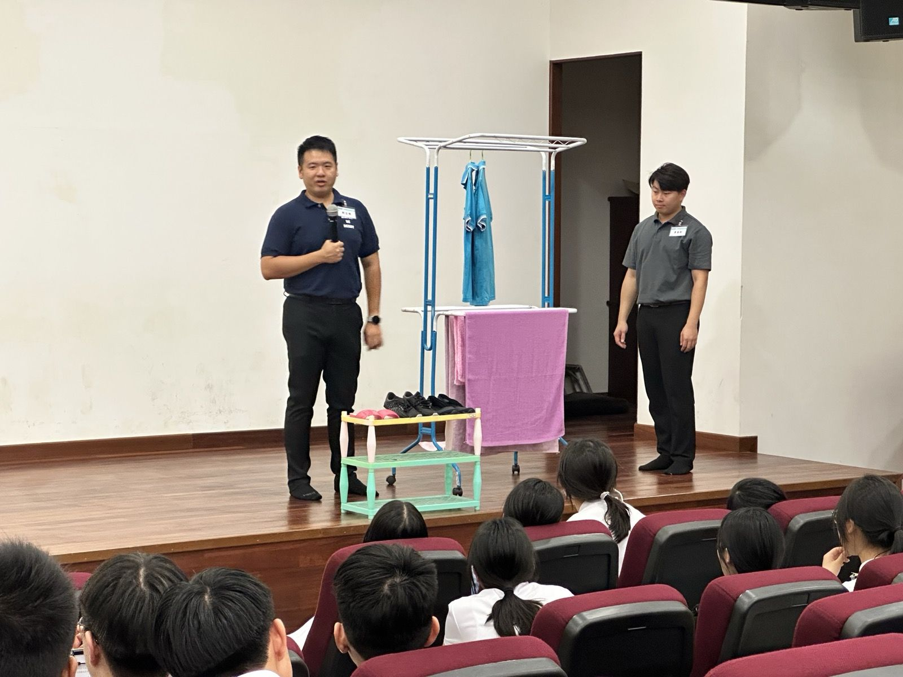
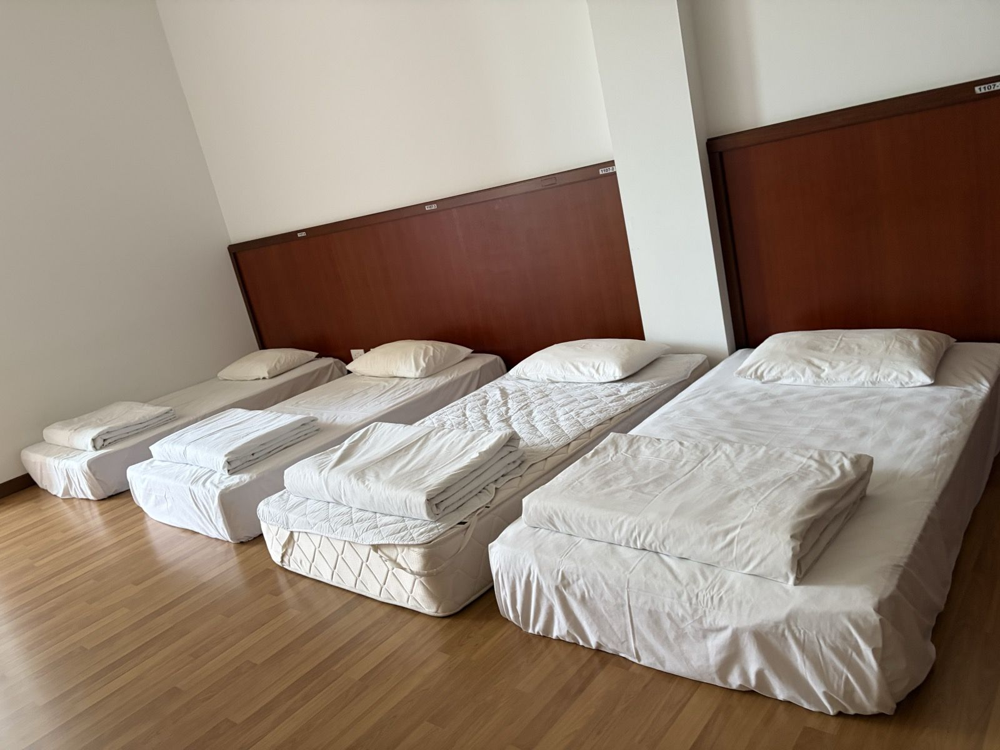
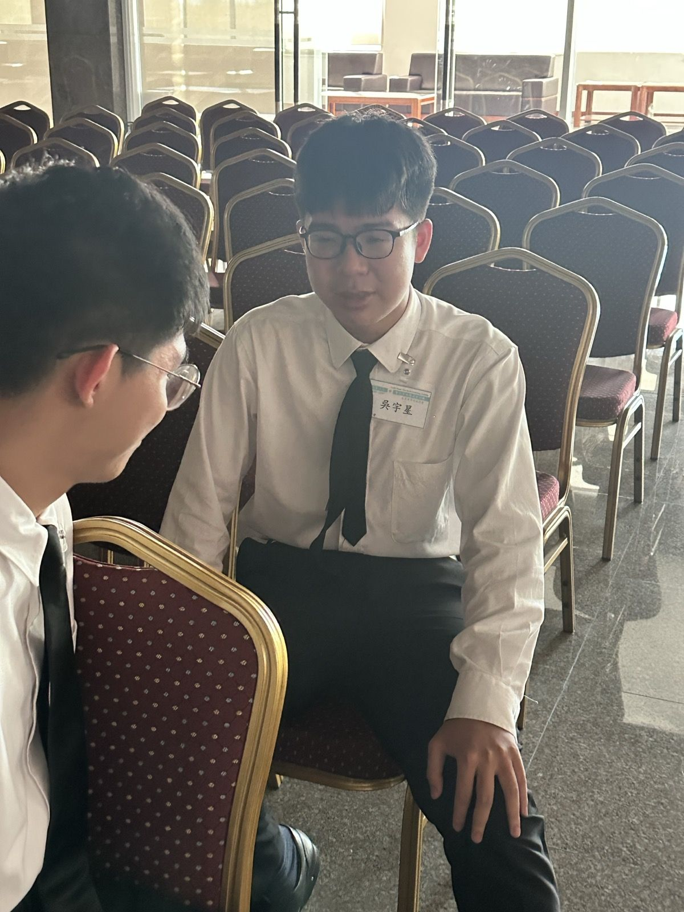
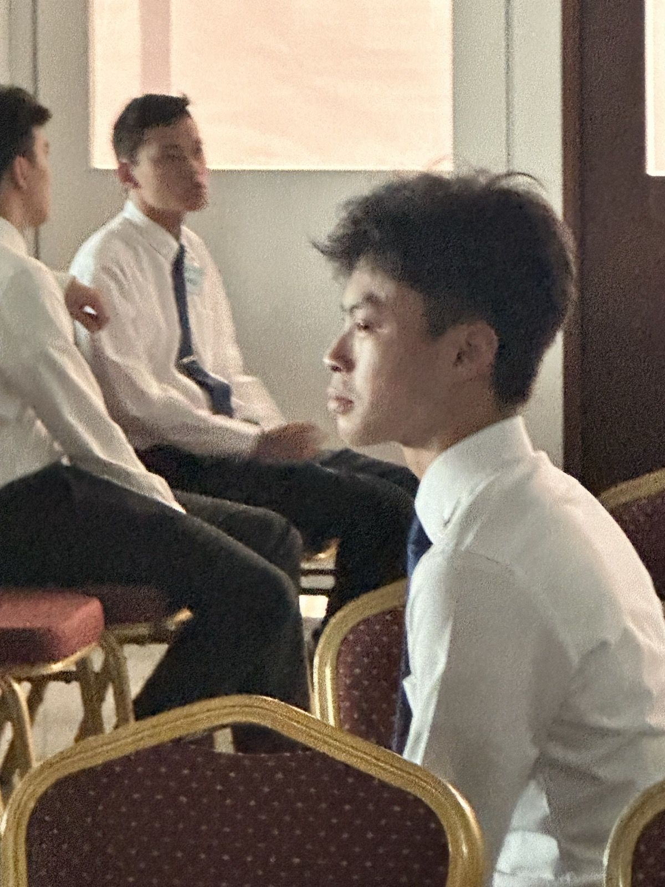
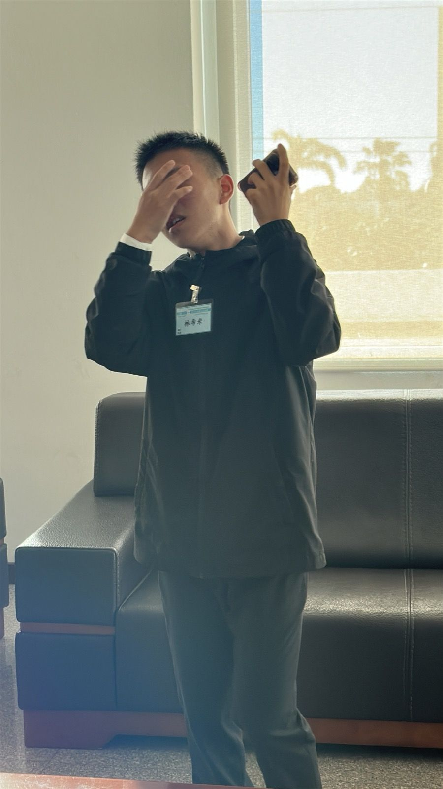
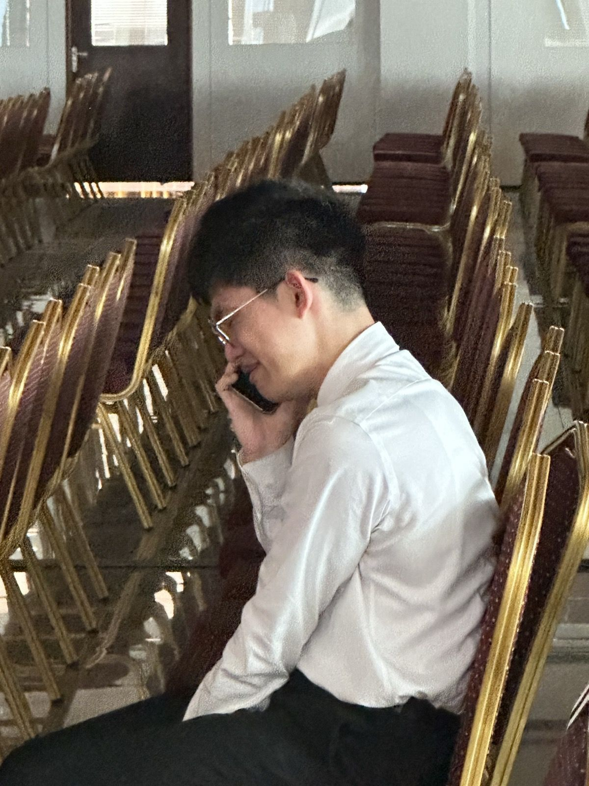
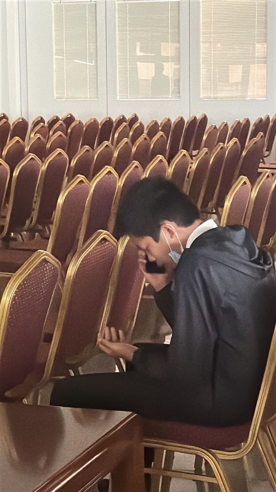
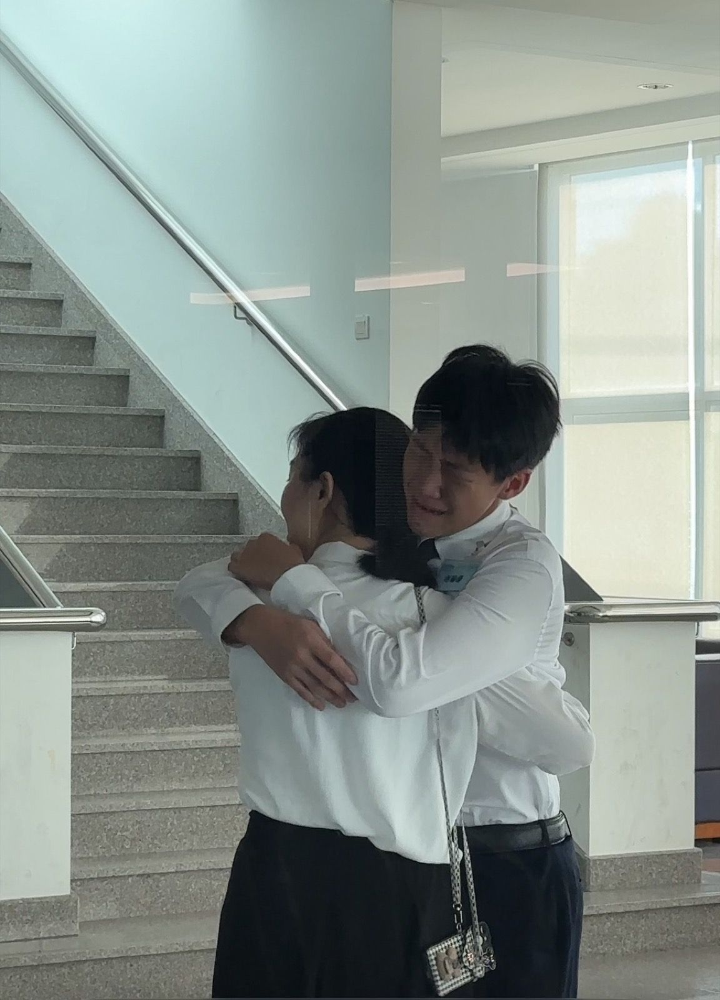

外面簡單了，神的話、服事者的交通，就容易進得去。
例如：宵夜
硬邦邦、像老婆餅的點心，弟兄姊妹卻搶着吃。
「你在台灣會吃這種東西嗎？」「不會。」
「凡事我都可行，但無論那一件我總不受牠的轄制。」
人有調劑的需要，但沒有顛倒的需要。


「許多人雖然已經悔改得救了，但從來沒有在神面前徹底認過罪，所以他們在得救以後沒有多少救恩的快樂，也沒有多少屬靈的飢渴、追求和長進。」






硬邦邦、像老婆餅的點心，弟兄姊妹卻搶着吃。
「你在台灣會吃這種東西嗎？」「不會。」
「例如吃飯這件事……撒但還把吃飯這件事，編組起來，無論是口味，是烹調，是吃法，都有各樣的講究。」
「我們的個性被翻掉多少，我們的用處顯出纔有多少。」
「但我們若在光中行，如同神在光中，就彼此有交通，祂兒子耶穌的血也洗淨我們一切的罪。」
「所以弟兄們，我藉着神的憐恤勸你們，將身體獻上，當作聖別並討神喜悅的活祭，這是你們合理的事奉。」
「這個心志說出人在神面前有一個存心，願意甘心樂意的為主受苦。」